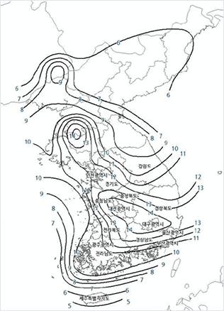
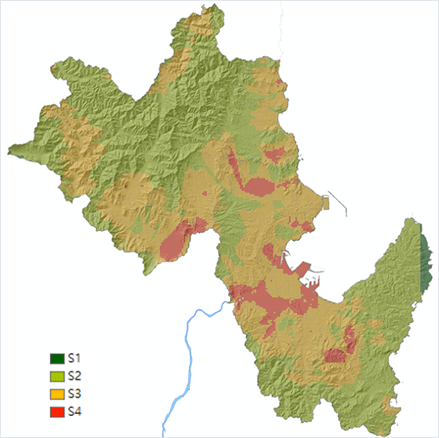

@@include('../inc/header.html')
지진재해 지역안전도 평가 등급별 행동 방안
지반운동의 결정
- 지진 발생 위치`의 불확실성 및 지역간의 상대비교를 위해서 기반암(지표 하부의 암반)에 내진설계기준에서 사용하는 국가지진위험지도(소방방재청, 2013)에 규정된 지반가속도를 적용하여 평가
- 다만 지역별로 지반특성 따른 지반운동 증폭효과를 고려하기 위하여 대상 지역을 0.5km x 0.5km 격자 단위로 분할하여 지반특성 DB를 구축
(지반운동 증폭효과: 지표 하부의 암반에 비하여 토층으로 덮인 지표의 지반운동이 증폭되는 효과)
- 기반암의 지반가속도에 증폭표과를 곱하여 각 격자별로 지표에서의 대표 지반가속도를 산정하여 건축물 피해 평가에 적용

[그림 3] 1000년 재현주기 국가지진위험지도

[그림 4] 0.5km x 0.5km 격자별 지반분류 (한국지질자원연구원, 2023)
[그림 5] 지반증폭효과 (동경도도시정비국)toshiseibi.metro.tokyo.lg.jp/bosai/chousa_6/home.htm#data1
@@include('../inc/footer.html')